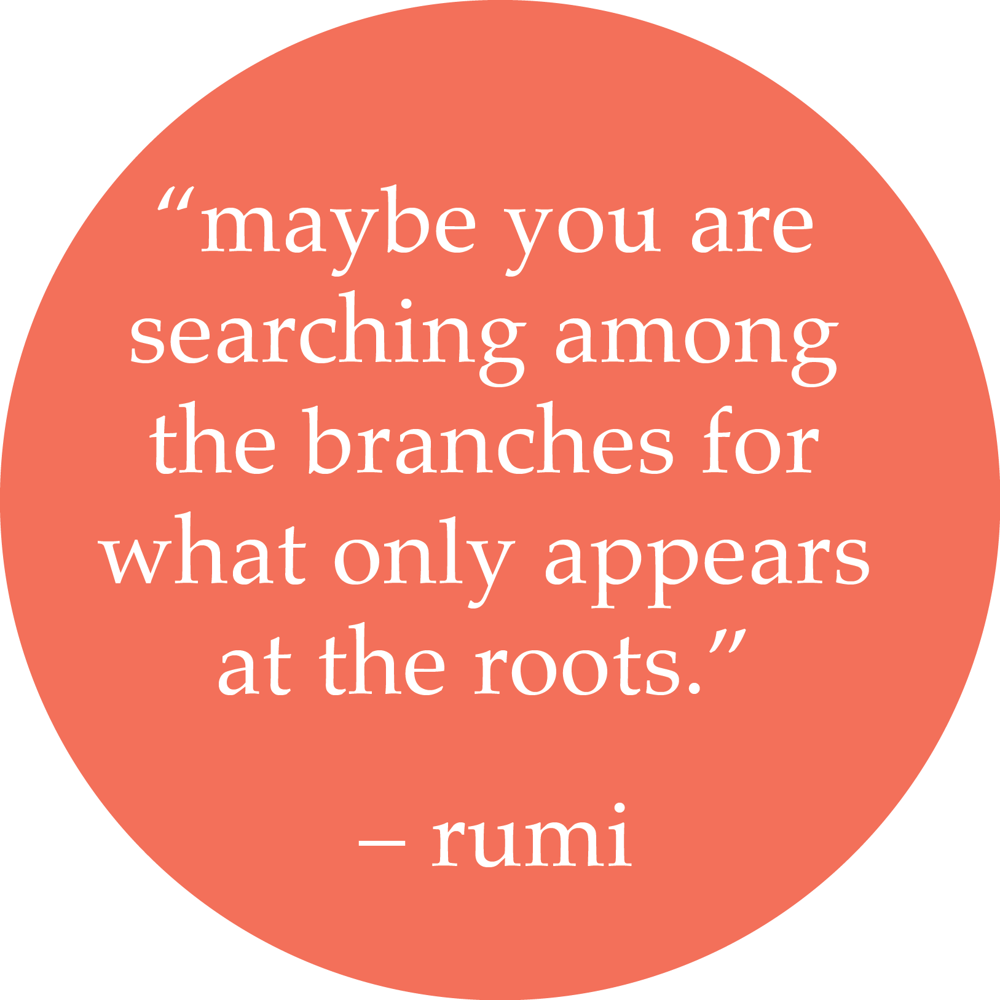
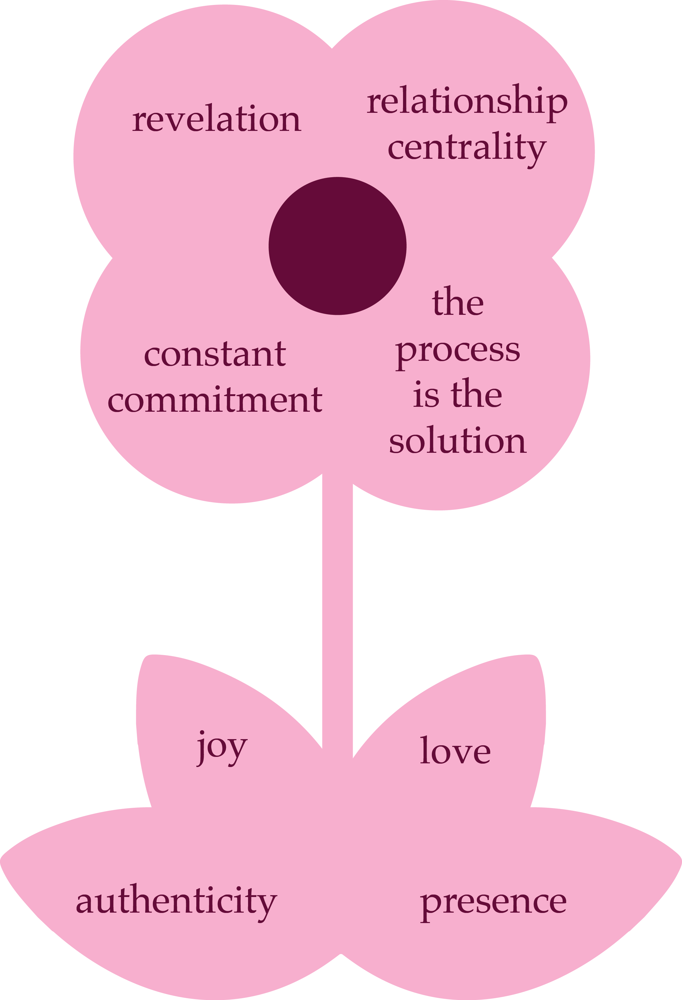

we believe that a healthy business culture is at the heart of a successful product.
if your business' culture does not support your employees, then the whole business suffers. from ineffectual communication patterns to lack of transparency in decision making and process and low retention rates, the success of the business is damaged. the impact of culture on product is subtle and powerful. it is often difficult so see the direct link between them. yet the link is there and can be seen through company productivity, effective communication across teams and management and satisfaction of employees.
our theory : garden meets tech
our methodology springs from the perspective of an urban farm. in nature, diversity is essential to survive and thrive. each plant requires particular conditions to grow successfully. by examining the mechanism of plant growth, we can adopt practices that enable our working environment to flourish. through our learnings from the farm, the optimal model of a healthy ecosystem, we bring in teachings to emulate prosperous models of growth.
our aim is to address gender diversity issues through the lens of nature. we optimize working conditions by shifting culture in the workspace to be more inclusive and supportive of each person’s needs for growth.
our work focuses on engaging with the root of the problem: how did we get to this moment in history, how do we understand ourselves and our co-workers through the lens of our own gender bias. we create a container to tackle these issues in a responsible and safe way. the work happens through multiple angles:
our technique : ecosystem driven learning
we know this work is hard. we harvested wisdom to support you along the way. we will provide your company with the strategy plan and the facilitation to guide you in this process and shift your business’ culture based on our guiding principles:
constant commitment
we engage in ongoing consistent work: because the nature of this work is deeply rooted, it often means it is hidden from the surface. there are no one time solutions for gender discrimination. rather, we must be doing the work consistently.
relationship centrality
we emphasize relationships: we know about ourselves through the ways we relate to others. relationships are at the core. dialogue and understanding the other is at the heart of the work.
revelation
we believe in the act of opening up: when engaging in this work, openness is essential. the more we open up, the closer we get to understanding.
the process is the solution
we are process oriented: we believe the process is the solution. this can be challenging if we desire quick results. only through process will we begin to uncover the hidden layers of our culture.
our guiding principles are joy, authenticity, presence and love.
joy enables us to access life’s energy - the parts within us that desires to grow.
authenticity connects us to our own truth by being in deep relationship with ourselves.
presence gives us awareness of the now through our existence in our surroundings. and
love, the mysterious force of healing that gives us permission to transform.
learn about our partnerships here